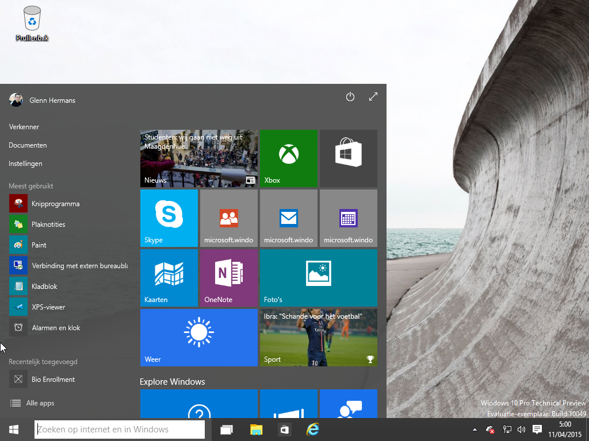

<map name="map">
<!-- #$-:Image map file created by GIMP Image Map plug-in -->
<!-- #$-:GIMP Image Map plug-in by Maurits Rijk -->
<!-- #$-:Please do not edit lines starting with "#$" -->
<!-- #$VERSION:2.3 -->
<!-- #$AUTHOR:glenn -->
<area shape="rect" coords="5,210,125,238" href="verkenner.png" />
<area shape="rect" coords="5,272,125,295" href="instellingen.png" />
<area shape="rect" coords="0,733,48,768" href="win10.html" />
<area shape="rect" coords="523,728,571,765" href="internet-explorer.png" />
<area shape="rect" coords="862,728,898,769" href="desktop-network.html" />
<area shape="rect" coords="912,729,953,770" href="meldingen.png" />
<area shape="rect" coords="889,727,917,776"  nohref="nohref" />
<area shape="rect" coords="895,731,900,738" href="soundbar.png" />
</map>
